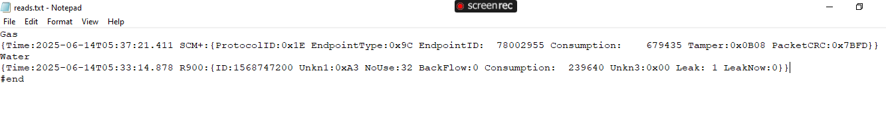

ZENITH-Worm
June3, 2025
Utility Peeper

This is a utlitiy meter reading program I'm still working on. It works by utilizing an rtl-sdr dongle to scan the 900 MHz range where Canadas radio broadcasting rules have banished utility meters to broadcast at. It then uses an rtlamr decoding program I scooped off of github github repo link and then sends that data to a text file I have set up. I messed around a lot trying to pipe the stdout data directly from running the rtlamr program as a subprocess but couldn't for the life of me get it to work properly. So this was my solution.

Specifically, the meters I am interested in reading are the ones in my home which are as follow:
| Utility | ert | model | frequency | period |
|---|---|---|---|---|
| WATER | Neptune | r900i | 902 - 928 MHz | 14 seconds |
| GAS | Itron | 100g H/H | 902 - 928 MHz | 14 seconds |
| ELECTRIC | GE | ???? | ???? | ???? |
Selecting a 'mode' pretty much just adds various filters ive programmed in. For example 2. filters out for only my houses erts id. while selecting 3 filters for just the pw workshop. Just copy and pasted the code for my house and changed the filter id #'s so I can show it off to my coworkers. Anyways heres a blank screen that I use as a backdrop to print the read results to [pulled out of the text file and drawn on each frame of this gif using the python PIL module]
Conclusion:
This project was mostly for the fuck of it to be honest, to see if I could. I have no interest in reading anyones meter data but my own so I doubt I will keep this radio attatched to my ZENITH as its kind of clunky in an already clunky device. What I may do in the future is set it up to monitor my home when I go on vacations in the winter. It would be quite simple to set it up to monitor usage and send me a text alert if there is water consumption when I am away. [leak notification] or in the winter if there is no gas usage [furnace has gone out]. Also it would be pretty easy to have it log the data and graph it or something, why not.
The gas and the water were easy for me to identify, but I get a lot of other reads from devices I can only assume are the electricity ones. But strangely enough I cant seem to match any of these mystery devices to my GE electricity meter. None of the consumption data matches up so either its an issue when they get decoded from the binary thats pulled from the radio signals or perhaps General Electric meters encrypt their data? Either way I don't know if theres much I can do to solve this one which is a shame, especially considering the elctricty is the one meter I don't have access to. If I could get my hands on a loose GE ert/amr I thought about taking it out into the middle of nowhere where theres no other radio signals around just to see how that specific meters data compares to what I pull out of its signal. As it stands now though its impossible to match up which signal comes from which amr, meaning unscrambling/decrypting it is next to impossible for me. As far as a house/vacation monitor electricity isn't as important as gas and water anyways. Still frusterating to be picking up the data though and just not being able to use it in any meaningful way.
As a final note, as part of my job I do the meter reading for my small municipality and a bit ago we were looking into upgrading our official Neptune brand water meter reader. I can't recall the price we were quoted but I do remember it was ridiculously expensive. So as an alternative I reached out to Itron because we had recently purchased a new gas meter reader. But unfortunatley they told me that no, the itron radio reciever cannot pick up the neptune erts. I find that funny how these devices they sell us for top dollar won't but a $30 usb sdr can pick them up + more just fine lol. And the signals not even encrypted!!! I could understand if neptune encrypted the signals but it's literally broadcast for anyone to listen in to.